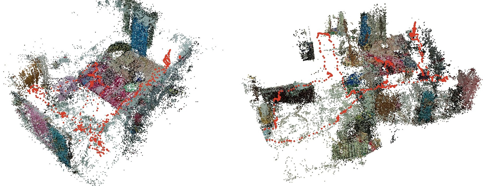
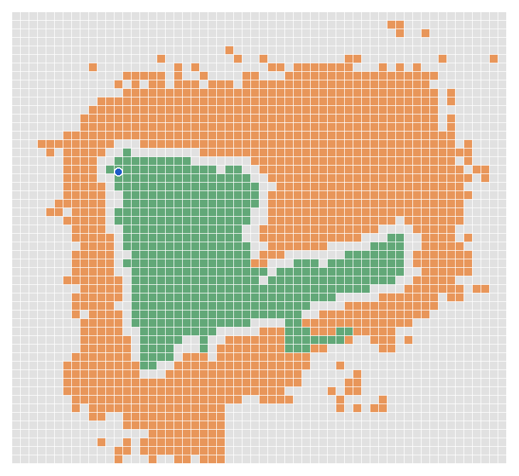

Team Matrix — Chepuri Dathatreya
IIT Techfest 2026, NammaSpace Challenge, Round 1: Technical Abstract
Project page and demo video: https://namma-space-documentation.pages.dev/ | Live viewer (Room): https://namma-space.pages.dev/room/ | Code: https://github.com/chepuridathathreya/Namma-Space
Abstract—NammaSpace turns one handheld phone video of an indoor space into a walkable 3D digital twin that runs in an ordinary web browser, with no scanner, depth sensor or hand modelling. Appearance and physics are kept in two separate representations: a 3D Gaussian splat [1] draws the room, and a 10 cm occupancy grid derived from the scan decides where the viewer can stand. On the best scene (the Room, 613 frames) the system reaches a held-out PSNR of 27.14 dB after 819 s of training on one GPU, in a scene file of about 8 MB. Three scenes are live and walkable. The work was built by Team Matrix for the NammaSpace Challenge, IIT Techfest 2026 (Round 1).
Index Terms—3D Gaussian splatting, structure from motion, digital twin, occupancy grid, WebGL2, indoor reconstruction, capture procedure.
Three programs hand files to each other: Prepare (CPU), Train (GPU, 16 GB or more) and Finish (CPU, seconds). run_all.py runs all three on one machine. The team's own setup runs Prepare and Finish on a laptop (6 GB GPU) and Train on a shared GPU PC.
Table IPipeline stages
| Stage | Output | Hardware | Time (Room) |
|---|---|---|---|
| 1. Frames, COLMAP poses, floor and scale | cameras, points, world.json | Laptop CPU | about 21 min |
| 2. Gaussian training (Splatfacto, 30k steps) | splat.ply | RTX PRO 6000 GPU | 819 s |
| 3. Align, clean, compress | scene.qsplat | Laptop CPU | about 15 s |
| 4. Web viewer (WebGL2 plus collision) | Static site | Any desktop browser | n/a |

Frame selection. Each frame is scored by the variance of its Laplacian on a reduced copy. The video is cut into half-second windows and the sharpest frame of each is kept. A colour check stops the run if frames are grey (an early version saved a greyscale copy by mistake).
Camera poses. COLMAP [2] runs feature extraction, sequential matching (suits video) and mapping. A health check keeps the largest model, warns below 80% of frames placed or when the walk splits into two large pieces, and stops below 40%. This is the slowest laptop step: 87 minutes for a 7-minute capture (883 frames).
Floor, scale and world frame. A plane fitted to the lowest points under the walking path sets the up direction and floor height zero. Scale assumes the phone was 1.4 m above the floor. This is an assumption, not a measurement, so all metric dimensions here are approximate. world.json maps COLMAP coordinates into one metric frame with Y up.
Training. 30,000 steps of Splatfacto (nerfstudio [3], gsplat [4]) at full image size, with some frames held out for scoring. The Room peaked at 16,251 MiB of GPU memory and exported 541,337 Gaussians after dropping 7,444 almost-transparent ones.
Alignment, cleaning, compression. The splat is moved into the same metric frame as the collision grid, and publishing is refused if the median distance from Gaussians to COLMAP points exceeds 0.4 m. Cleaning removes almost-transparent or absurdly large Gaussians, floaters more than 1.2 m from anything the cameras saw, and ghost copies more than 12 cm under the floor or above 3.3 m (glossy surfaces cannot be modelled as mirrors). The rest is sorted most-important-first (opacity times size), so any file prefix is the best subset, then packed into the custom .qsplat format (40-byte header, 17 bytes per Gaussian) and gzipped.
Most failures were capture faults, not software faults. The full SOP is in docs/CAPTURE_SOP.md; it describes only what was done for the Room.
Table IICapture settings (Room scene)
| Item | Setting |
|---|---|
| Phone, mode | POCO X6, manual (Pro) mode |
| Lens | 0.6x ultra-wide, used throughout |
| Focus, shutter, ISO | Manual focus, 1/100 s, ISO 800 |
| White balance, EV | 5000 K fixed, EV 0 |
| Video | 1920 × 1080, 30 fps, landscape |
Fixed settings stop the same wall changing brightness between frames. Use even lighting, close curtains that throw bright patches, keep people and pets out, wipe the lens and cover mirrors. Hold the phone at chest or eye height, landscape, tilted slightly down. Walk one continuous lap at about 0.5 m/s, turn slowly and finish where you started. Tilt up slowly for the ceiling if wanted.
Afterwards, take still photos from the same height, lens and settings: three to four per corner, a small step apart, each showing something the video also shows. The Room used 26 photos, all registered.
Table IIIFailure cases and rules
| Problem | Cause | Rule |
|---|---|---|
| Doubled walls, bent doors | Second lap, other angle | One lap, one height |
| Black ceiling | Plain ceiling never filmed | Tilt up, add ceiling photos |
| Ghosts below floor | Reflections | Cover mirrors; delete under-floor Gaussians |
| Fewer frames placed | Fast or broken walk | Slow, continuous walk |
| Rough corners | Barely covered | Extra photos |
Not measured: lighting; capture time (about 8 to 10 minutes is an estimate); the effect of the extra photos. A 4K re-capture is still open.
Collision grid. A 10 cm occupancy grid [5]. A cell is an obstacle when at least three points lie in it between 0.15 m and 1.7 m above the floor. Free space comes from cells near the walked path, and nothing within 20 cm of the path can be an obstacle. A 25 cm margin (the player radius) is added around obstacles (Fig. 2).
The trained splat is a second, independent source: its map is combined with the camera-path map, only the region connected to the walked path is kept, and the step stops if the walked path or start would be blocked. On the Room this removed 17 of 430 walkable cells while the walked path stayed 100% walkable. The grid has not been validated against measured walls, furniture or doorways, so treat it as a believable walking boundary, not surveyed geometry.

Viewer. Plain static files, no build step. A custom WebGL2 shader on three.js draws the Gaussians, and a background worker re-sorts them back to front. Movement is first-person; if the target cell is blocked the viewer slides along the wall. A live map shows walkable floor, obstacles, position and viewing cone. Because the file is sorted best-first, the viewer can draw 250k, 500k or all Gaussians.
Table IVViewer controls
| Input | Action |
|---|---|
| W A S D or arrows, Shift, Space | Move, run, jump |
| Mouse (click scene first); Esc | Look; free the cursor |
| R | Return to the door |
| 1, 2 | Splat view, mesh view (if the scene has one) |
| M, N | Collision grid overlay, live map |
Performance. Informal single-machine observations, not a benchmark: 24 to 38 fps on a laptop's integrated GPU with automatic detail steps (about 250k to 500k Gaussians), and 170 to 180 fps on an RTX 3060 laptop GPU with all Gaussians. At start-up the viewer measures its frame rate and, below 35 fps, steps down to fewer Gaussians and lower resolution.
The Room scores 27.14 dB PSNR, 0.913 SSIM and 0.191 LPIPS on held-out frames. Higher is better for PSNR and SSIM; lower is better for LPIPS. The hallway used every eighth frame as held-out (109 of 868).
Table VReconstruction results per scene
| Scene | Frames | Gaussians | PSNR (dB) | SSIM | LPIPS | Training (s) | Walkable (m²) |
|---|---|---|---|---|---|---|---|
| Room | 613 | 541,337 | 27.14 | 0.913 | 0.191 | 819 | 4.3 |
| Hallway and Bedroom (v2) | 868 | 650,654 | 26.46 | 0.874 | 0.244 | 995 | 15.8 |
| Early Bedroom | n/a | 700,000 shown | n/a | n/a | n/a | n/a | 8.1 |
The Early Bedroom predates the evaluation step. The Room is a different scene from the hallway, so its higher score may come from the capture method or an easier room; no controlled improvement is claimed. Within the hallway family, a first run scored 23.56 dB (709 frames) and the improved run 26.46 dB (868 frames), but frame count, pipeline fixes and capture conditions all changed, so the gain is not attributed to one cause. The whole Room training job (prepare, train, export) took 843 s.
Requirements: Linux or WSL2, an NVIDIA GPU with 16 GB or more, 20 GB of disk, ffmpeg, COLMAP 3.9 or newer, and nerfstudio with gsplat (Blackwell GPUs need CUDA 12.8 builds).
python run_all.py --check python run_all.py --test python run_all.py --video my_walkthrough.mp4
These list missing requirements, run the bundled sample with a short training, and run a full capture to the website. Tested: preparation and finishing on Windows; training on Linux in the two-machine setup; the requirement check and finishing on the bundled sample. Not yet tested: one-machine training on a separate clean GPU machine.
Limitations. Ceilings and unseen areas are rough or dark. Collision is two-dimensional: no stairs or overhangs. Scale is assumed from a 1.4 m phone height. A fast or broken walk reduces the frames COLMAP can place. Training needs about 16 GB of GPU memory.
Future work. Points of interest on the same grid as the live map, and navigation that keeps routes in walkable space (Round 2); a learned reconstruction model, tested on the same held-out frames; diffusion-based filling of unseen areas, an AR view, and stronger collision where the two evidence sources disagree.
What the stages exchange. Prepare converts a recorded space into original-colour selected frames, COLMAP camera intrinsics and registered poses (cameras.bin, images.bin), sparse 3D landmarks (points3D.bin), world.json and an initial collision grid. Train reads that camera solution and imagery, optimizes Splatfacto, and returns splat.ply and dataparser_transforms.json. Finish reverses training normalization, applies the world transform, validates spatial alignment, filters unreliable Gaussians, refines scan-derived collision and emits a static scene package. The browser loads assets/manifest.json, the compressed .qsplat and *_collision.json; no training server runs when someone visits the deployed scene.
A video, its solved cameras, its Gaussian scene and its collision grid must all belong to the same capture. This one-video, one-scene contract matters: an earlier pipeline accidentally mixed assets from different scenes. The single-machine run_all.py and the team's ZIP-based laptop-to-GPU handoff implement the same three stages.
Spatial query and collision semantics. The world frame has Y upward and the estimated floor at Y = 0. For a world location (x, z), the grid column is floor((x − originX) / cell) and its row is floor((z − originZ) / cell), with cell = 0.10 m. The JSON distinguishes occupied cells, supported by wall or furniture evidence, from blocked cells, which also include clearance inflation and unavailable floor. A player radius of 0.25 m limits the route to positions with sufficient predicted clearance.
The initial grid uses sparse COLMAP points and the observed walking path. A second occupancy estimate uses the cleaned Gaussian reconstruction. The finishing script combines the two, rejects a map that blocks the start or observed route, and retains the connected walkable region. Collision is therefore reconstructed from the scan, not painted by hand. It remains a 2D approximation and does not represent stairs, overhangs or surveyed geometry. Monocular scale is anchored to an assumed 1.4 m phone height, so reported distances inherit that uncertainty.
Viewer asset and rendering boundary. The exported PLY contains Gaussian position, size, orientation, opacity and colour. The .qsplat stores a 40-byte header and 17 quantized bytes per Gaussian before gzip compression. High-contribution Gaussians come first, so the viewer can draw useful 250k or 500k prefixes instead of full detail. WebGL2 provides visual appearance; the grid controls movement. A visually convincing wall is not, by itself, proof that the corresponding blocked cell is spatially accurate.
Image quality and SOP comparisons. Room and Hallway and Bedroom v2 have held-out scores, but they are different physical rooms, so the higher Room score cannot be attributed solely to its capture SOP. The hallway change from 23.56 dB to 26.46 dB likewise involved several changes at once. To isolate an SOP factor, repeat the experiment in the same room, hold out the same viewpoints, keep training settings fixed and change one factor (lens, resolution, extra photos or walking route). The tested Room recipe was 0.6x ultra-wide at 1920 × 1080, 30 fps; a higher-resolution alternative has no directly comparable held-out score. A complete split manifest and repeated-run statistics should accompany future formal claims.
Viewer FPS. The 24 to 38 fps (integrated GPU) and 170 to 180 fps (RTX 3060 laptop) figures are not standardized cross-device benchmarks. FPS depends on the browser's GPU selection, active Gaussian count, viewport size, auto-detail resolution, camera view and software environment. A reproducible test must fix scene, camera route, viewport, device-pixel ratio, browser and driver, detail mode, warm-up and duration, log the active resolution and Gaussian budget, and report median FPS, 1% low FPS and p95 frame time over repeated trials. These results have not yet been collected under one protocol.
Collision, scale and reproducibility. Independent validation should compare predicted blocked and free cells with a measured floor plan and annotated doorway and furniture positions, reporting both false-open obstacles and false-blocked accessible floor; test wall sliding, diagonal movement and start-point reset; and compare at least one known room dimension against the 1.4 m scaling assumption. The repository provides --check, --test and --video, but a full fresh one-machine GPU test and native Windows training were not independently verified. These are open validation tasks, not claimed capabilities.
The source of truth is the repository: docs/CAPTURE_SOP.md (tested capture), docs/RUN_GUIDE.md (workflow), docs/HARDWARE_AND_REMOTE_SETUP.md (environment), namma_pipeline/scripts/step1_prepare.py (frame selection and COLMAP), build_collision_from_colmap.py and build_collision_from_splat.py (automatic occupancy), step3_finish.py (alignment and packaging), namma_pipeline/viewer_template/main.js (rendering and navigation), and 01_room/notes/TRAINING_REPORT.md (Room metrics). The narrated demo is a separate submission asset. Point-of-interest navigation, a learned reconstruction model, generative completion and AR are roadmap ideas, not demonstrated Round 1 functions.
[1] B. Kerbl, G. Kopanas, T. Leimkühler and G. Drettakis, “3D Gaussian splatting for real-time radiance field rendering,” ACM Trans. Graph. (SIGGRAPH), vol. 42, no. 4, 2023.
[2] J. L. Schönberger and J.-M. Frahm, “Structure-from-motion revisited,” in Proc. IEEE CVPR, 2016, pp. 4104–4113.
[3] M. Tancik et al., “Nerfstudio: A modular framework for neural radiance field development,” in ACM SIGGRAPH Conf. Proc., 2023.
[4] V. Ye et al., “gsplat: An open-source library for Gaussian splatting,” arXiv:2409.06765, 2024.
[5] A. Elfes, “Using occupancy grids for mobile robot perception and navigation,” Computer, vol. 22, no. 6, pp. 46–57, 1989.